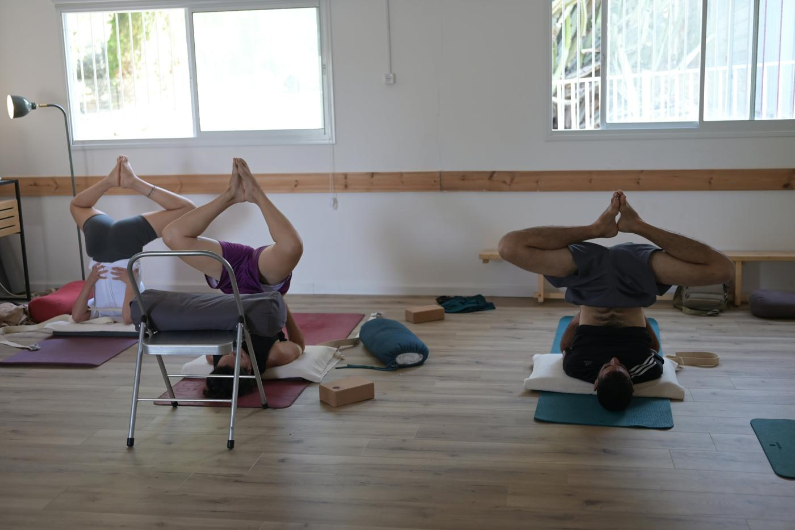
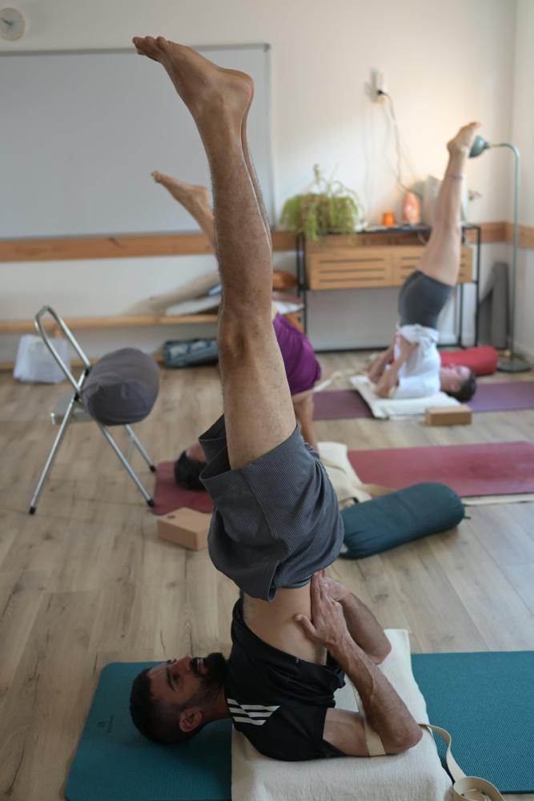
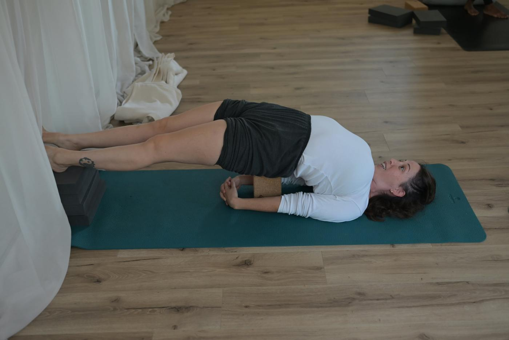

שיעורים והשיטה
ארבעה שיעורים בשבוע בשיטת איינגר, בקבוצות קטנות של עד 12 מתרגלים, בקיבוץ דורות.
השיטה
יוגה בשיטת איינגר
השיטה נקראת על שם ב.ק.ס. איינגר (1918–2014), ממורי היוגה המשפיעים במאה העשרים, שלימד בפונה שבהודו. ספרו "אור על היוגה" (Light on Yoga), שיצא לאור ב-1966, הפך לאחד מספרי היסוד של היוגה המודרנית.
איינגר שם במרכז את הדיוק ואת היישור הנכון של הגוף בכל תנוחה, ופיתח שימוש באביזרי עזר. האביזרים מאפשרים לכל מתרגל, בכל גיל ובכל מצב גופני, להגיע לתנוחה בצורה בטוחה ולשהות בה לאורך זמן.
דיוק ויישור
כל תנוחה נבנית בשלבים, עם הנחיות מדויקות לרגליים, לאגן ולגב. לומדים לעבוד נכון, ולא רק להגיע לצורה.
אביזרי עזר
האביזרים מאפשרים לכל אחד להיכנס לתנוחה בדרך שמתאימה לו, בלי לכפות על הגוף.
- כיסאות
- לבנים
- חגורות
- בולסטרים
- שמיכות
לכל גיל ולכל גוף
יש לכם פציעה, כאב או מגבלה? ספרו לפני השיעור, והתרגול יותאם לכם.
השיעורים
איזה שיעור מתאים לי?
מתחילים / ממשיכים
למי שחדש בשיטה, ולמי שממשיך לבסס את היסודות: תנוחות עמידה, ישיבה ופיתולים, עם הסבר מפורט ועבודה עם אביזרים.
גב ומפרקים
שיעור ממוקד בגב, בצוואר, בכתפיים ובמפרקים. תרגול שקט ומדויק, עם הרבה תמיכה של כיסאות, בולסטרים וחגורות. מתאים למי שמתמודד עם כאבי גב תחתון, כאבים אחרים או מגבלות.
מתחילים / ממשיכים
אותו מסלול כמו ביום שני, למי שנוח לו יותר אמצע השבוע.
לכל הרמות
שיעור בוקר לכל המתרגלים. כל תנוחה מוצגת בכמה גרסאות, כך שכל אחד עובד ברמה שמתאימה לו.
למה לתרגל
מה התרגול נותן
- גוף חזק וגמיש יותר, ויציבה טובה יותר ביום-יום
- הקלה בעומס על הגב, הצוואר והכתפיים
- נשימה עמוקה ושקטה יותר
- ריכוז ותשומת לב לגוף, שממשיכים גם מחוץ לשיעור
- זמן של רוגע, בקבוצה קטנה ומכירה
מה קורה בשיעור
איך נראה שיעור
כל שיעור בנוי סביב נושא אחד, למשל עבודה על הכתפיים או על יציבות הרגליים. מתחילים בהתארגנות ובנשימה, ממשיכים לתנוחות עמידה וישיבה, ובהתאם לרמה ולמצב של כל מתרגל גם לתנוחות הפוכות בעזרת אביזרים. מסיימים בשווסנה, מנוחה עמוקה בשכיבה.
רותם מסתובבת בין המתרגלים, מתקנת ומתאימה. אם יש לכם פציעה, כאב או הריון, ספרו לה לפני השיעור.
מהשיעורים
תמונות מהסטודיו



למה סנטושה
סנטושה פירושה שביעות רצון
סנטושה היא אחד מחמשת עקרונות ההתנהלות (ניאמות) שמופיעים ביוגה סוטרות של פטנג'לי, הטקסט הקלאסי של היוגה. המשמעות היא שביעות רצון: היכולת להיות שלמים עם מה שיש, כאן ועכשיו.
על המזרן זה אומר לעבוד עם הגוף שיש לנו היום, לא עם הגוף שהיינו רוצים שיהיה. אנחנו מכבדים את המגבלות, נעזרים באביזרים, ומתקדמים בהדרגה.
"משביעות רצון מושג אושר שאין עליון ממנו."יוגה סוטרות של פטנג'לי, 2.42
מה להביא
בגדים נוחים שמאפשרים תנועה, ובקבוק מים. מתרגלים יחפים. כל האביזרים מחכים בסטודיו.
רוצים לנסות?
שיעור ניסיון עולה 50 ₪, והסכום מתקזז מהמנוי למי שממשיך. מנויים וכרטיסיות – פרטים מלאים בשיחה עם רותם.